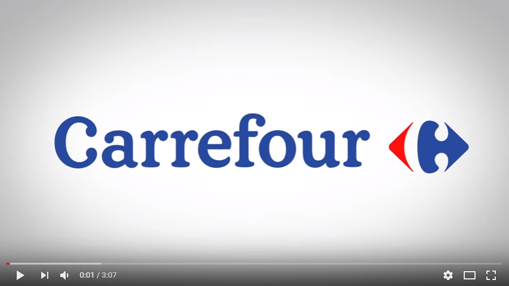

é uma rede internacional de hipermercados fundada na França em 1960. Em 2004, o grupo detinha dez mil unidades em trinta países e empregava quatrocentos mil funcionários. O volume de negócios em 2002 foi de 86 bilhões/mil milhões €, distribuído do seguinte modo: 51% na França, 34% no resto da Europa, 8% na América Latina e 7% na Ásia. Na França, a rede Carrefour é numerosa. Integram-na: Champion, Ed (Dia % e Minipreço), Supermarchés GB, Shopi, 8 à Huit e aínda as lojas Proxi. Há também sites de comércio virtual na internet, sob o nome de Ooshop e Carrefour Online. O Carrefour comprou em 1999 a Promodès, e investiu ainda nos hipermercados Continente. Em Portugal, o grupo contava com 12 lojas e mais 9 postos de combustível adjacentes nas cidades de Aveiro, Braga, Coimbra, Loures, Montijo, Oeiras, Portimão, Paços de Ferreira, Telheiras, Vila Nova de Gaia, Torres Novas e Viseu. Todas as lojas fecharam em 2008. O Brasil foi o destino escolhido para a primeira loja Carrefour do continente americano. Com o lançamento de novas lojas e aquisição de redes regionais como Planaltão, Roncetti, Mineirão, Rainha, Dallas, Big, Eldorado, Continente e Atacadão.[2] A rede expandiu-se tornando o Carrefour uma das maiores empresas varejistas do país. A disputa pela liderança no setor varejista é acirrada, todavia, quando da aquisição da rede Atacadão, chegou-se a anunciar a tomada da liderança por parte do grupo Carrefour. Seus maiores concorrentes são o GPA, o Walmart e a Cencosud que entrou na briga com a aquisição das redes GBarbosa, Mercantil Rodrigues, Perini, Bretas e Prezunic.
